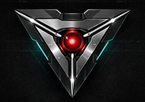

¿En qué parte del seguimiento sienten que se pierden más oportunidades hoy?

Isthmus Dynamics · Honest AI Ops
Val Discovery Mode
Herramienta interna de Isthmus Dynamics para guiar discovery, capturar decisiones y ordenar próximos pasos.
Paso 1 de 5
Val Discovery · reunión guiada
Preguntar
AHORA: haz esta pregunta al cliente.
Aún no hay sugerencia. Primero captura una respuesta.
Aún no hay resultado organizado.
Centro = botón principal
→ avanzar
← corregir
↑ reformular
↓ resumen
Avanzado / cockpit
Cambia a Operador para ver setup, agenda, Q&A seguro, voz, ArcX debug, categorías, notas, whiteboard completo y controles técnicos.
Setup de reunión
Contexto para Val Discovery
Captura asistida: Frank confirma y clasifica la respuesta. Val sugiere próximos pasos con reglas locales.
Flujo guiado
Cuatro pasos para operar en vivo
Presencia Val
Núcleo de discovery guiado
No es un agente completo. No graba, no escucha y no usa datos reales. Frank opera la reunión.
Estado: en espera
Paso: intro Centro: iniciar discovery Modo seguro: escribe/corrige la respuesta cuando Val lo indique. → avanzar ← corregir ↑ reformular ↓ resumen/cierre Mantener: menú
Audio en modo texto. Cambia a Voz navegador si quieres probar TTS.
Voz de Val / fallback navegador
Voz actual: texto, sin voz de navegador seleccionada.
Modo audio: Texto. Para demo ejecutiva, audio premium local puede reemplazar la voz del navegador.
ArcX / teclado debug
Use este panel para confirmar qué key/code emite el anillo. Ring Control ON intercepta Numpad y números 8/6/2/4/5 como comandos.
event.key
-event.code
-location
-target editable
-handled
-Val action
-Val dice
Guía de reunión
Listo para iniciar. Esta pantalla ayuda a ordenar discovery, decisiones, riesgos y próximos pasos.
Preguntas rápidas
Agenda
- Validar dolor operativo
- Revisar vista gerencial
- Revisar flujo asesor
- Identificar datos/campos necesarios
- Definir alcance de piloto
- Acordar próximo paso
Uso en reunión
- Frank introduce Val como herramienta interna.
- Frank usa Val para mostrar el marco de la sesión.
- Frank muestra la maqueta CRM.
- Frank vuelve a Val para preguntas guiadas.
- Se capturan notas, decisiones, riesgos y próximos pasos.
- Frank genera un resumen local para seguimiento.
Guardrails / límites
Herramienta interna en desarrollo. No graba, no persiste datos, no llama APIs externas y no opera PowerClub. Frank confirma la información antes de usarla.
Q&A seguro de Val
Cápsula local/scripted. Frank puede escribir una pregunta y Val responde solo si hay una respuesta segura preparada.
VAL MENTOR / flujo guiado
Flujo principal de operador: captura, sugiere, aprueba y organiza. Frank decide antes de usar cualquier sugerencia.
Qué hago ahora
Ahora: haz la pregunta.
Sin respuesta capturada.
Pendiente
Vista gerencial
¿Qué necesita ver gerencia cada mañana para saber dónde actuar?
Modo local activo. Backend LLM no conectado.
Sugerencia de Val
Aún no hay sugerencia. Frank puede usar el modo local sin bloquear la reunión.
Discovery guiado
Pregunta actual
Dolor operativo
¿En qué parte del seguimiento sienten que se pierden más oportunidades hoy?
Modo seguro: Frank puede escribir o corregir la respuesta antes de organizarla.
STT experimental del navegador. Modo seguro: escribir/corregir respuesta.
Categorías
Captura avanzada
Val observa
Capture una respuesta para que Val sugiera el siguiente movimiento de discovery.
Banco de categorías
- Dolor operativo
- Visibilidad gerencial
- Flujo asesor
- Datos y fuentes
- Alcance de piloto
- Riesgos / exclusiones
- Próximo paso
Whiteboard vivo
Val organiza la conversación en tiempo real
No hay análisis autónomo. La clasificación es local/determinística y Frank confirma cada captura.
Dolor detectado
Señales / patrones
Datos pendientes
Decisiones
Riesgos / exclusiones
Próximo paso recomendado
Val recomienda mostrar
Puente hacia la maqueta CRM
Captura de reunión
Notas, decisiones, riesgos y próximos pasos
Resumen local
Resumen local
Salida para seguimiento
El resumen se genera en esta página desde lo capturado. No hay persistencia ni servicios externos.
Listo para generar resumen.